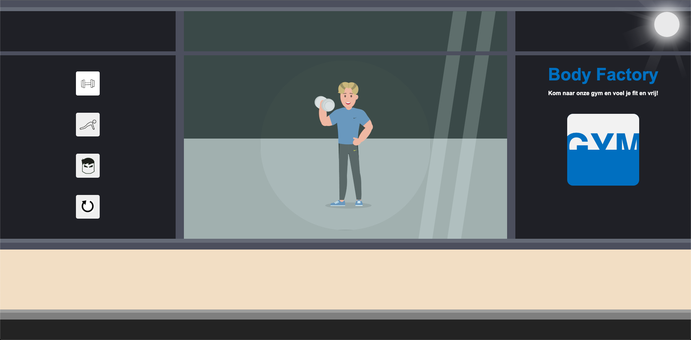

Als toekomstige ontwerper kun je niet om animatie en motion heen. Animatie en motion graphics worden steeds meer toegepast in interactieve applicaties. Bijvoorbeeld om informatie over te brengen maar ook om interactie vloeiender, logischer of leuker te maken. Bij het vak Interface & Beweging leert de student hoe je een animatie maakt, hoe je motion in een interface-ontwerp kunt toepassen en hoe je een interactieve ervaring kan verrijken en verbeteren met behulp van animatie en geluid. Bij interface & Interactie was het de opdracht om een karatker te ontwerpen in een bijpassende omgeving en die te animeren.
Naar PrototypeDit was voor mij de eerste keer dat ik heb gewerkt met animaties. Dit is voor mij wel een groot leerproces geweest omdat ik echt vanaf 0 begon. Ik heb bij dit vak de basics geleerd van Adobe After Effect en hoe je Illustrator bestanden moet opmaken zodat ze animeerbaar zijn. Dit vak heeft wel mijn interesse gewekt in het animeren. Niet zozeer in het maken van grote gedetailleerde animaties, maar wel in micro animaties die de ervaring op een website net af maken.
